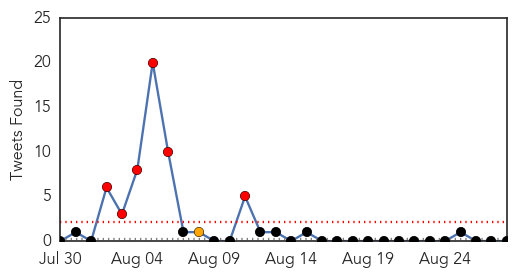
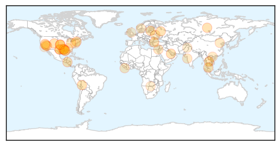
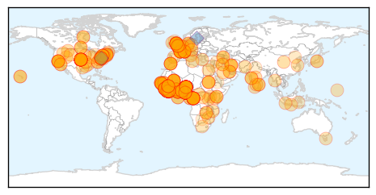

Unknown
30-Day Web Trend
1 alerts, 0 warnings

30-Day Twitter Trend
6 alerts, 1 warnings

Article Locations
Article Confidences

Top Articles:
- 0.917
- Chicago Tribune
- 0.910
- The world windows to Thailand
- 0.883
- KRNV, Reno, NV
- 0.883
- KRNV, Reno, NV
- 0.883
- KRNV, Reno, NV
- 0.874
- Experts: Heed the need to prevent infectious disease
- 0.866
- Aymara women chat with each other during a ceremony in Calamarca
- 0.866
- Hamas' Meshaal says resistance won't cease, urges Egypt to open Rafah crossing
- 0.866
- U.N. chief "alarmed" at reports of wider fighting in Ukraine
- 0.866
- Turkish President Erdogan appoints Davutoglu acting prime minister
- 0.866
- A helmet lies along a roadside as Thai security personnel inspect the site of a bomb attack in Pattani province
- 0.866
- Ukrainian PM Yatseniuk asks U.S., EU and G7 to freeze Russian assets
- 0.866
- Ukraine rebel leader says Russian soldiers in their ranks
- 0.866
- France's Hollande says "unacceptable" if Russian troops in Ukraine
- 0.866
- Police officers help an elderly couple move their belongings from their home after they received threats from street gang Mara 18 in Tegucigalpa
- 0.861
- Texas Cyclospora Cases Traced to Fresh Cilantro From Mexico
- 0.825
- Thousands at risk of brain-eating amoeba found in Louisiana water system
- 0.817
- Cyclosporiasis Cases Linked To Fresh Cilantro From Mexico
- 0.735
- Brain-eating bacteria found in Louisiana parish water supply
- 0.703
- Hospitals' hand washing strategies effective in reducing patient infection rates
- 0.695
- Airlines stop flights as US expert warns outbreak will 'worsen' ▪ Iranian.com
- 0.694
- Brain-eating amoeba detected in Louisiana
- 0.689
- Gaza: Providing Medical Care Through War and Truce
- 0.672
- ‘Docs, apart from govt, to blame for rise in drug-resistant TB’
- 0.663
- Not Too Early to Get Flu Shot
- 0.663
- Second district farm hit by anthrax
- 0.653
- The Lancet: China-themed issue
- 0.633
- Vietnam preventing A/H5N6 outbreak - Xinhua
- 0.627
- 8 Auburn University students test positive for TB infection, not the actual disease
- 0.622
- Brain-Eating Amoeba Found In Louisiana Parish's Water System
- 0.608
- CVS Caremark Announces New Clinical Affiliation with MedStar Health
- 0.594
- Patients with intestinal polyps have lower risk of dying from cancer
- 0.578
- JJ’s Hera Therapeutics Presents Antiviral Drug For HPV
- 0.559
- Three Louisiana Towns Warned To Keep Tap Water Out Of Noses
- 0.554
- Red squirrels under threat from rare leprosy
- 0.548
- Brain-eating amoeba found in La. parish's water system
- 0.548
- Brain-eating amoeba found in La. parish's water system
- 0.545
- Govt bans livestock movement in Zambezi
- 0.533
- Urgent action needed on climate change to cut health risks, warns WHO
- 0.525
- VN tackles latest avian flu outbreak
- 0.521
- Killer Amoeba Found in Louisiana Water System (Video)
- 0.513
- Hospitals on high alert once again
- 0.511
- Jamaica Hospital testing lung drug
- 0.508
- Five Ways Summer's Heat Brought Hazardous Beach, Lake Conditions
Top Tweets:
- 0.523
- Hoy ha sido un d√≠a de eso ricos ‚ò∫Ô∏èüòäüò≥üòöüòç
Ebola
30-Day Web Trend
26 alerts, 4 warnings

30-Day Twitter Trend
22 alerts, 6 warnings

Article Locations
Article Confidences

Top Articles:
- 1.000
- Experts warn Ebola outbreak ‘out of control’
- 1.000
- Untitled Article
- 1.000
- Ebola virus could infect 20,000 before outbreak is over, World Health Organization says
- 1.000
- Sense of urgency heightens over Ebola crisis
- 1.000
- Ebola Containment 'Chaotic and Entirely Inadequate,' Says Doctors Without Borders
- 1.000
- WHO fears Ebola outbreak could infect 20,000 people
- 1.000
- West Africa Ebola outbreak could infect 20,000 people, WHO says
- 1.000
- WHO: Ebola Cases Could Eventually Reach 20,000
- 1.000
- Danger of Ebola as haj pilgrims kept in dark
- 1.000
- Ebola Cases Might Exceed 20K as Human Vaccine Tests Begin
- 1.000
- Ebola outbreak: Airlines stop flights as US expert warns outbreak will 'worsen'
- 1.000
- Ebola cases may exceed 20,000
- 1.000
- Unprecedented number of medical staff infected with Ebola
- 1.000
- Protecting medical workers against Ebola in Liberia — SOS Children
- 1.000
- Ebola Death Toll In West Africa Tops 1550
- 1.000
- Experient Health Discusses Low Ebola Risk in United States in Latest Blog Post
- 1.000
- Ebola Outbreak Could Infect 20,000 People, U.N. Says
- 1.000
- Ebola Has 'Upper Hand' Says US Health Official
- 1.000
- NationalJournal
- 1.000
- Airlines Isolate Ebola Zone Nations
- 1.000
- Ebola Outbreak in Sierra Leone Began at a Funeral
- 1.000
- Ebola zone countries isolated as airlines stop flights
- 1.000
- West Africa Ebola outbreak could infect 20,000 people: WHO
- 1.000
- Origin Of Ebola Outbreak May Be A Bat And Virus Has Rapid Mutation Rate
- 1.000
- Ebola outbreak could infect 20,000
- 1.000
- CDC Warns Epidemic May Worsen; Current Outbreak Deadliest Since 1976
- 1.000
- UN: Ebola cases could eventually reach 20,000
- 1.000
- Ebola: five countries, one fear
- 1.000
- Experient Health Discusses Low Ebola Risk in United States in Latest Blog Post
- 1.000
- Rapidly mutating Ebola could infect up to 20,000, health officials say
- 1.000
- UN: Ebola disease caseload could reach 20,000
- 1.000
- UN: Ebola disease caseload could reach 20,000
- 1.000
- Ebola outbreak: Six reasons why it's out of control
- 1.000
- CDC Worker Flown Home After Low Risk Exposure
- 1.000
- Ebola spreads to Nigeria oil hub Port Harcourt
- 1.000
- WHO issues road map to combat Ebola outbreak
- 1.000
- Ebola outbreak: US health chief predicts death toll will 'get worse'; Nigeria keeps schools closed
- 1.000
- Ebola outbreak reaches Senegal, riots break out in Guinea
- 1.000
- West Africa Ebola outbreak could infect 20,000 people, WHO says
- 1.000
- Nigeria’s Health Minister Onyebuchi Chukwu Confirms Ebola Death In Port Harcourt
- 1.000
- West Africa Ebola outbreak could infect 20,000 people, WHO says
- 1.000
- #WHO says #Ebola cases could exceed 20,000
- 1.000
- Ebola disease caseload could reach 20,000 (Update)
- 1.000
- Ebola zone countries isolated as airlines stop flights
- 1.000
- West Africa Ebola outbreak could infect 20,000 people, WHO says
- 1.000
- Deadliest Ebola Outbreak in History Death Toll Climbs Over 1,500; Continues Accelerating
- 1.000
- Ebola outbreak: West Africa travel bans to be lifted
- 1.000
- Ebola outbreak: WHO warns that virus could infect 20,000
- 1.000
- Ebola outbreak: US official says epidemic will worsen
- 1.000
- Ebola Outbreak in Sierra Leone Is Tied to One Funeral
Showing top 50 articles...
Top Tweets:
- 0.984
- RT: .@JeremyKonyndyk & @USAID Ebola DART met w/ Liberia'n President Sirleaf on stopping spread of Ebola http://t.c…
- 0.863
- RT: WHO issues today a roadmap to guide and coordinate the international response to the Ebola outbreak in West Africa http://t.co/iu…
- 0.822
- RT: At this time, the Ebola outbreak in DRC is believed to be unrelated to the ongoing outbreak in West Africa http://t.co/k1bI4OLnqB
- 0.785
- Ebola in West Africa prevents access to regular health services. Increases malaria risks http://t.co/6lCki4VzSW
- 0.753
- More than half of Ebola beds needed for 3-country outbreak, acc to, are in a single city, Monrovia: 840 out of 1515.
- 0.750
- RT: Ebola in West Africa (28th August update) http://t.co/SHpdbwkQKt
- 0.704
- Spoke w/Liberia’s MOH, Dr. Gwenigale & Liberian health authorities to learn about measures used to stop Ebola spread http://t.co/wjEcZwnGzS
- 0.643
- .@WHO says re: Ebola numbers: "the actual number of cases may be 2-4 fold higher than that currently reported" http://t.co/oObFVxicmz
- 0.640
- RT: Nearly 40% of the total number of Ebola reported cases have occurred within the past three weeks http://t.co/iu2BJ3Qbm3
- 0.631
- If multiplier is correct, actual caseload right now = 6k to 12k. Does 20K total include unreported cases? Ebola http://t.co/VGlgllpYEy
- 0.624
- RT: Read about the work of CDC laboratories in producing first genomic sequence of Liberian Ebola virus. http://t.co/v3dMWAy…
- 0.572
- It costs $200 to trace a single Ebola contact; $400 to conduct safe Ebola burial. http://t.co/oObFVxicmz
- 0.564
- “Deaths from malaria... could soar while Africa’s over-stretched healthcare systems fight Ebola” http://t.co/IiTz9YHTTm
- 0.556
- If Ebola roadmap works, epidemic still wouldn't slow until Thanksgiving. http://t.co/oObFVxicmz